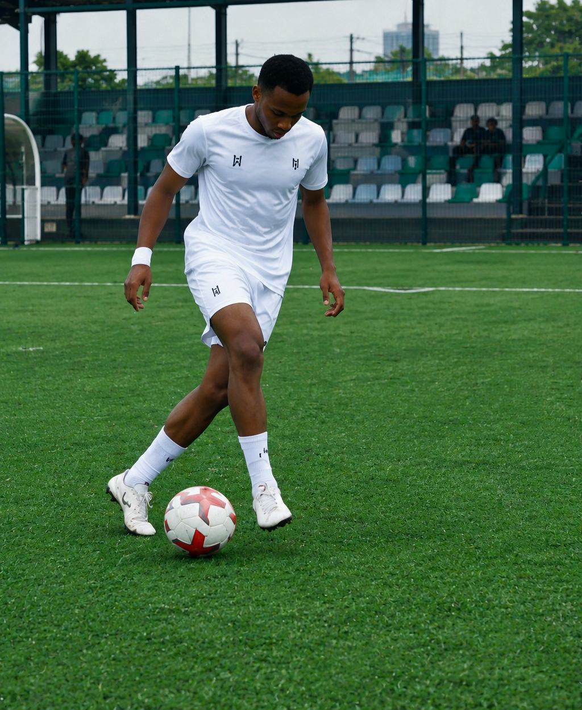
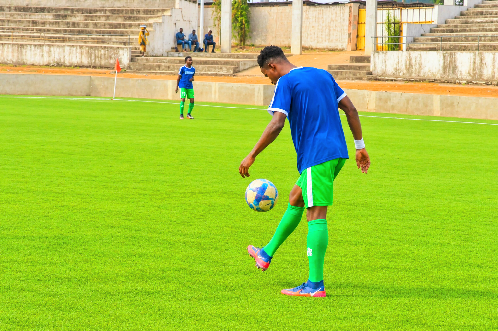

PROFESSIONAL FOOTBALLER

Position: Striker
Nationality: Nigerian
Languages: English and Hausa
Current Club: Sun Sport FC
My football journey, passion and dreams.
My name is John Musa, also known as Jay. I am a Nigerian footballer who plays as a striker.
Football is my passion. I am hardworking, dedicated and committed to improving my game. My dream is to play at the highest level and represent my country proudly.

Moments from my football journey, training and matches.
I have gained valuable football experience through different teams and competitions. Each opportunity has helped me grow as a striker and develop my game.
Goals scored: 9
Big chances created: 15
For football opportunities, trials and professional enquiries, please get in touch.
Email: johnmusa746@gmail.com
Phone: 08107033963
My goal is to keep improving, work hard and earn opportunities to play professional football at the highest level.
Thank you for visiting Jayking Football.
Goals Scored
Big Chances Created